Literate programs are written in a metalanguage that mixes document formatting language and a programming language(C++ for this book). It has the characteristic to mix prose with source code and mechanism to present code in entirely different order, to allow readers to focus more on the core of the code.
Just like C++ programs, the literate programs in this book are based on C++ programming language with extra declarations below:
This shows a summary of a fragment of code, where you do not need to know what it done specifically. The detail can be added later on.
Example:
void initGlobals() {
<Initialize Global Variables>
}
We can define the details of <Function Definitions> with following declaration:
<Initialize Global Variables> ≡
shoe_size = 13;
Note that the it can be partial declaration, so that we can focus on the part we are interested in. Later on, we can append more declaration.
We can append more definition to previously defined functions.
<Initialize Global Variables> +≡
dielectric = true;
The goal of photorealistic rendering is to create an image of a 3D scene that is "indistinguishable" from a photograph of the same scene. The main idea of doing this is to replicate the real physical world phenomena into programs, formulating it into mathematical equations and programming logics.
Most photorealistic rendering system are based on ray-tracing algorithm. It is based on following the path of ray of light through scene as it interacts with 3D objects in the environment.
Although the implementations of ray tracer may varied, all such systems simulate at least following objects and phenomena:
Just as the real-world camera, it is responsible to capture light and in render into 2D images in render system. The simplest abstraction of camera is the pinhole camera model:
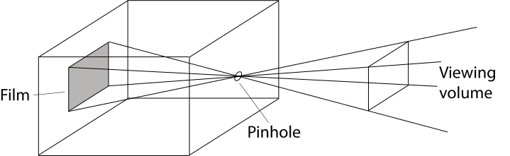Connecting the pinhole to the edges of the film creates a double pyramid that extends into the scene. The pyramid that extends into the scene is called viewing volume, which refers to the region of space that can potentially be imaged onto the film.
An alternative presentation of pinhole camera is shown below:
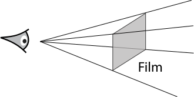It is not a practical camera model, but it helps simplify the structure of pinhole camera for convenience, as we are only interested about the interaction between camera and the scene.
Although camera models can be more complicated when we tried to simulate the real world camera, the detail part of the camera modeled can be encapsulated inside the camera module. The task of camera simulator is to determine the color of each point in the image, by generating rays along which light is known to contribute to that image location.
Each time the camera generates a ray, the first task is to detect any objects intersect with the ray, and where do the intersections occurred. The intersections represent a possible visible point along the ray.
To find intersection of ray, we define the parametric form of the ray as:
where $ o $ stands for the ray's origin, $ d $ as the ray's direction vector, and $ t $ as a parameter for how far the ray had traveled in range [0, ∞).
To find intersection of a ray and surface we simply substitute ray equation into surface function. For example a sphere surface with equation:
Substituting ray equation we get:
By solving this quadratic equation in $ t $ we can find the intersection point. If there are real roots, and we choose smallest $ t $ to get the first intersection point.
Now we get the intersection points, we need to know additional geometric information about the intersection point. On other hand, it is not practical to use brute-force intersection approach. The following topics, will be discussed in later section.
The ray-object intersection allows us to know a point to be shaded, but we need to find the th amount of eye leaving from this point to our camera. This include the geometric and radiometric distribution of lights sources in the scene. It is easy for simple light source like point lights, but it does not exist in the real world.
From figure below:
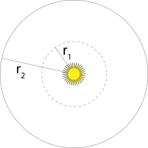We see that if same amount of light energy is distributed on both sphere with $ r_1 $ and sphere with $ r_2 $, the larger surface area will have lesser energy distributed. Specifically, amount of energy distributed on sphere with radius $ r $ will be proportional to $ 1 / r^2$.
Also we can see from below:
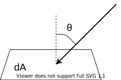The amount of energy deposited on $ dA $ is proportional to $ \cos{\theta} $.
Consequently, the total light energy $ dE $ deposited on $ dA $ is
A light source only deposits energy on a surface if the source is not obscured as seen from the receiving point. The light source on the left illuminates the point , but the light source on the right does not.
To determine whether the light is visible from the point being shaded, we simply construct a new ray whose origin is at the surface point and pointing towards the light source. These special rays are called shadow rays. If the intersection point of shadow ray is greater than the distance to light or no intersection points found, there is no blocking object between light and the surface, hence the light's contribution is included.
Now we need to determine how incident lighting is scattered at the surface. Especially the amount of light energy scattered back along the ray.
Each object in the scene provides a material, describing its appearance at each point on the surface. The description is given by Bidirectional Reflectance Distribution Function(BRDF), which tells us the amount of energy reflected from an incoming ray $ \omega_i $ to outgoing ray $ \omega_o $.
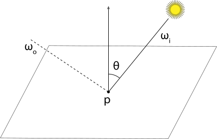We will write the BRDF at point $ p $ as $ f_r(p, \omega_o, \omega_i) $. The code representation of amount of light scattered back to eye:
for each light:
if light is not blocked:
incident_light = light.L( point )
amount_reflected = surface.BRDF( hit_point, light_vector, eye_vector)
L += amount_reflected * incident_light
$ L $ represent the light energy, it has different unit compare to $ dE $.
In general, the amount of light reaches the eye from a point on an object is the sum of emitted light and reflected light. This idea is formalized by the light transport equation(rendering equation):
Where:
Solving this integral analytically is not practical, so we either simplify the assumptions or use numerical integration technique.
For example, Whitted's algorithm simplify this equation by ignoring most directions and only evaluating $ L_i(p, \omega_i) $ for directions to light sources and perfect reflection and refraction.
Not surprisingly, the recursive nature of ray tracing will lead to two problems. When to terminate the recursion? How to choose the direction of the ray so that the rendering algorithm can converge at reasonable time?(This will be discussed later)
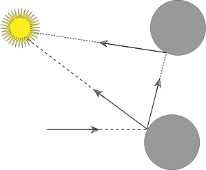Recursive ray tracing associates an entire tree of rays with each image location.
The prior discussion are assumed that light transport through a vacuum, where the energy of light is distributed equally without decreasing along the way. However, it is possible that the light will attenuate or even scatter it into different directions. The participating medium is introduced to explain such phenomena where we can capture this effect by computing transmittance $ T $ between ray origin and intersection point, how much light scattered at the intersection point makes its back to the ray origin.
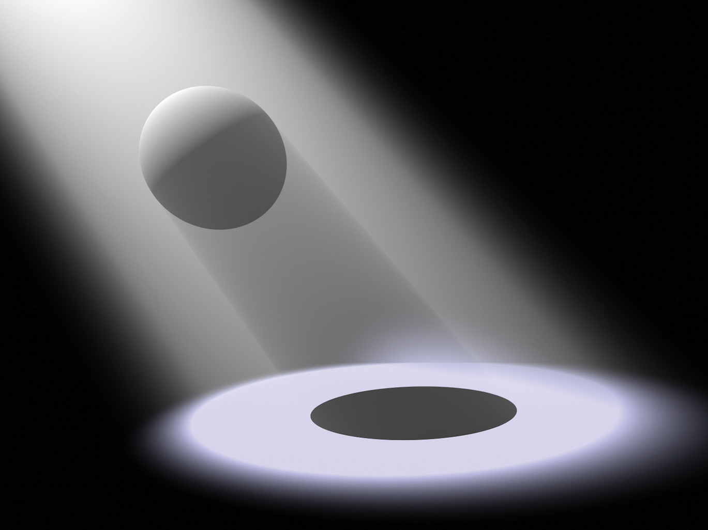Notice that the shape of the spotlight’s lighting distribution and the sphere’s shadow are clearly visible due to the additional scattering in the participating medium.
pbrt is structured using standard object-oriented techniques: abstract base classes are defined for important entities (e.g., a Shape abstract base class defines the interface that all geometric shapes must implement, the Light abstract base class acts similarly for lights, etc.). The majority of the system is implemented purely in terms of the interfaces provided by these abstract base classes; for example, the code that checks for occluding objects between a light source and a point being shaded calls the Shape intersection methods and doesn’t need to consider the particular types of shapes that are present in the scene. This approach makes it easy to extend the system, as adding a new shape only requires implementing a class that implements the Shape interface and linking it into the system.
pbrt supports 10 different types of plug-ins:
| Base class | Directory | Section |
|---|---|---|
| Shape | shapes/ | 3.1 |
| Aggregate | accelerators/ | 4.2 |
| Camera | cameras/ | 6.1 |
| Sampler | samplers/ | 7.2 |
| Filter | filters/ | 7.8 |
| Material | materials/ | 9.2 |
| Texture | textures/ | 10.3 |
| Medium | media/ | 11.3 |
| Light | lights/ | 12.2 |
| Integrator | integrators/ | 1.3.3 |
pbrt can be conceptually divided into two phases of execution:
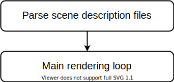The scene description files is a text file that specifies everything in the scene(geometries, material properties, light, camera, and parameters for algorithms). The end result of this phase is an instance of Scene class.
The main rendering loop is implemented in Scene::Render() method which will be discussed in later section. In summary, it determines the light arriving at a virtual film plane for a large number of rays in order to model the process of image formation.
pbrt's main() function(found in the file main/pbrt.cpp):
<main program> ≡
int main(int argc, char *argv[]) {
Options options;
std::vector filenames;
<Process command-line arguments>
pbrtInit(options);
<Process scene description>
pbrtCleanup();
return 0;
}
After the scene file is parsed, a Scene object and an Integrator object are created.
<Process scene description> ≡
if (filenames.size() == 0) {
<Parse scene from standard input>
} else {
<Parse scene from input files>
}
If pbrt is run with no input filenames provided, then the scene description is read from standard input. Otherwise it loops through the provided filenames, processing each file in turn.
Scene class is declared in core/scene.h and defined in core/scene.cpp:
Class Scene {
public:
<Scene Public Methods>
<Scene Public Data>
private:
<Scene Private Data>
};
<Scene Public Methods> ≡
Scene(std::shared_ptr aggregate, const std::vector> &lights)
: lights(lights), aggregate(aggregate) {
<Scene Constructor Implementation>
}
Each light is represented by Light object, which specifies shape and distribution of light.
<Scene Public Data> +≡
vector<Light *> *lights;
Each geometric object in the scene is represented by a Primitive , which contain two objects: a Shape defining its geometry, and a Material describing its appearance.
<Scene Private Data> ≡
Primitive *aggregate;
The constructor caches the bounding box of the scene geometry in the worldBound member variable:
<Scene Constructor Implementation> ≡
worldBound = aggregate->WorldBound();
<Scene Private Data> +≡
Bounds3f worldBound;
<Scene Public Methods> +≡
const Bounds3f &WorldBound() const { return worldBound; }
Some Light implementations find it useful to do some additional initialization after the scene has been defined but before rendering begins, but this requires their Preprocess() methods being called in Scene constructor:
<Scene Constructor Implementation> +≡
for (const auto &light : lights)
light->Preprocess(*this);
The Scene provides two method to ray-primitive intersection: Intersect() method fills in the SurfaceInteraction object about closest intersection point; while IntersectP only check if there is any intersections along the ray:
<Scene Method Definitions> ≡
bool Scene::Intersect(const Ray &ray, SurfaceInteraction *isect) const {
return aggregate->Intersect(ray, isect);
}
bool Scene::IntersectP(const Ray &ray) const {
return aggregate->IntersectP(ray);
}
Integrator is an abstract base class that defines the Render() method that must be provided by all integrators. The basic integrator interfaces are defined in core/integrator.h, and some utility functions used by integrators are in core/integrator.cpp. The implementations of the various integrators are in the integrators directory.
<Integrator Declarations> ≡
class Integrator {
public:
<Integrator Interface>
};
<Integrator Interface> ≡
virtual void Render(const Scene &scene) = 0;
This chapter will focus on SamplerIntegrator, which is an Integrator subclass, and the WhittedIntegrator, which implements the SamplerIntegrator interface.
<SamplerIntegrator Declarations> ≡
class SamplerIntegrator : public Integrator {
public:
<SamplerIntegrator Public Methods>
protected:
<SamplerIntegrator Protected Data>
private:
<SamplerIntegrator Private Data>
};
SamplerIntegrator stores a pointer to a Sampler. The role of the Sampler is to choose the points on the image plane from which rays are traced, and to supply the sample positions used by integrators for estimating the value of the light transport integral \eqref{eq:light_transport}:
<SamplerIntegrator Private Data> ≡
std::shared_ptr<Sampler> sampler;
The Camera object stores the camera's parameters, it also contains a Film member variable to handle image storage.
<SamplerIntegrator Protected Data> ≡
std::shared_ptr camera;
SamplerIntegrator stores pointers to both Camera and Sampler object:
<SamplerIntegrator Public Methods> ≡
SamplerIntegrator(std::shared_ptr<const Camera> camera,
std::shared_ptr<Sampler> sampler)
: camera(camera), sampler(sampler) { }
SamplerIntegrator may optionally implement the Preprocess() method:
<SamplerIntegrator Public Methods> +≡
virtual void Preprocess(const Scene &scene, Sampler &sampler) { }
Integrator::Render():
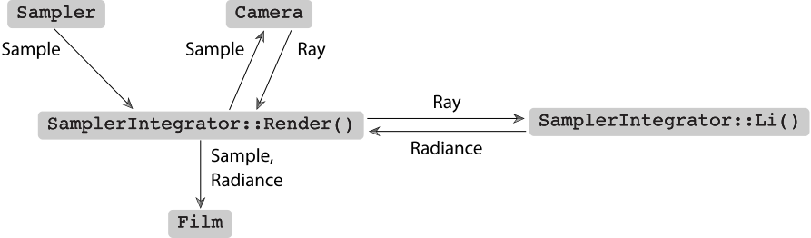For each pixel on the image plane, the Camera and the Sampler generate ray into the scene, then use the Li() method to determine the amount of light arriving at the image plane along that ray. This value is then passed to Film to record the light's contribution.
<SamplerIntegrator Method Definitions> ≡
void SamplerIntegrator::Render(const Scene &scene) {
Preprocess(scene, *sampler);
<Render image tiles in parallel>
<Save final image after rendering>
}
The ParallelFor2D() function implements a parallel for loop to loops over the image tiles, where multiple iterations may run in parallel:
<Render image tiles in parallel> ≡
<Compute number of tiles, nTiles, to use for parallel rendering>
ParallelFor2D(
[&](Point2i tile) {
<Render section of image corresponding to tile>
}, nTiles);
Now to decide the size of the image tiles, wee need to consider two problems: load-balancing and per-tile overhead. If we choose a large image-tile size, it is most likely that the processors handling simpler image tile will end earlier and will be idling if there is no more task. On other hand, if we choose image tile size that is too small, the accumulated overhead for determining which iteration loop a processing core should run next will be larger, thus making it inefficient.
For simplicity, pbrt always uses 16 × 16 tiles:
<Compute number of tiles, nTiles, to use for parallel rendering> ≡
Bounds2i sampleBounds = camera->film->GetSampleBounds();
Vector2i sampleExtent = sampleBounds.Diagonal();
const int tileSize = 16;
Point2i nTiles((sampleExtent.x + tileSize - 1) / tileSize,
(sampleExtent.y + tileSize - 1) / tileSize);
<Render section of image corresponding to tile> ≡
<Allocate MemoryArena for tile>
<Get sampler instance for tile>
<Compute sample bounds for tile>
<Get FilmTile for tile>
<Loop over pixels in tile to render them>
<Merge image tile into Film>
MemoryArena instances manage pools of memory to enable high performance allocation. Instances of this class can only be used by a single thread:
<Allocate MemoryArena for tile> ≡
MemoryArena arena;
Sampler used in different thread mostly require it to maintain different state. For example, a pseudo-random number generator(so that the same pseudo-random number is not generated in every tile):
<Get sampler instance for tile> ≡
int seed = tile.y * nTiles.x + tile.x;
std::unique_ptr tileSampler = sampler->Clone(seed);
Next, the extent of pixels to be sampled is computed:
<Compute sample bounds for tile> ≡
int x0 = sampleBounds.pMin.x + tile.x * tileSize;
int x1 = std::min(x0 + tileSize, sampleBounds.pMax.x);
int y0 = sampleBounds.pMin.y + tile.y * tileSize;
int y1 = std::min(y0 + tileSize, sampleBounds.pMax.y);
Bounds2i tileBounds(Point2i(x0, y0), Point2i(x1, y1));
Finally, a FilmTile is acquired from the Film. This store pixel values for the current tile:
<Get FilmTile for tile> ≡
std::unique_ptr<FilmTile> filmTile = camera->film->GetFilmTile(tileBounds);
Rendering can now proceed:
<Loop over pixels in tile to render them> ≡
for (Point2i pixel : tileBounds) {
tileSampler->StartPixel(pixel);
do {
<Initialize CameraSample for current sample>
<Generate camera ray for current sample>
<Evaluate radiance along camera ray>
<Add camera ray’s contribution to image>
<Free MemoryArena memory from computing image sample value>
} while (tileSampler->StartNextSample());
}
The CameraSample structure records the position on the film for which the camera should generate the corresponding ray. It also stores time and lens position sample values, which are used when rendering scenes with moving objects and for camera models that simulate non-pinhole apertures, respectively.
<Initialize CameraSample for current sample> ≡
CameraSample cameraSample = tileSampler->GetCameraSample(pixel);
The Camera interface provides two methods to generate rays: Camera::GenerateRay() which returns the ray for a given image sample position, and Camera::GenerateRayDifferential() which returns a ray differential, incorporating information about neighboring ray in both x and y directions.
<Generate camera ray for current sample> ≡
RayDifferential ray;
Float rayWeight = camera->GenerateRayDifferential(cameraSample, &ray);
ray.ScaleDifferentials(1 / std::sqrt(tileSampler->samplesPerPixel));
ScaleDifferentials method scales the differential rays to actual spacing for the case where multiple samples are taken per pixel. The camera also return a weight associated with the ray to simulate the vignetting effect.
Next, the Li() method determine the radiance arriving at the image plane along the ray:
<Evaluate radiance along camera ray> ≡
Spectrum L(0.f);
if (rayWeight > 0)
L = Li(ray, scene, *tileSampler, arena);
<Issue warning if unexpected radiance value is returned>
Li() is a pure virtual method that returns the incident radiance at the origin of a given ray; each subclass of SamplerIntegrator must provide an implementation of this method.
The method returns a Spectrum that represents the incident radiance at the origin of the ray:
<SamplerIntegrator Public Methods> +≡
virtual Spectrum Li(const RayDifferential &ray, const Scene &scene,
Sampler &sampler, MemoryArena &arena, int depth = 0) const = 0;
FilmTile::AddSample() method updates the pixels in the tile's image given the results from a sample:
<Add camera ray’s contribution to image> ≡
filmTile->AddSample(cameraSample.pFilm, L, rayWeight);
After processing a sample:
<Free MemoryArena memory from computing image sample value> ≡
arena.Reset();
<Merge image tile into Film> ≡
camera->film->MergeFilmTile(std::move(filmTile));
<Save final image after rendering> ≡
camera->film->WriteImage();
Whitted's ray-tracing algorithm accurately computes reflected and transmitted light from specular surface, but it does not account for indirect lighting. The WhittedIntegrator class can be found in the integrators/whitted.h and integrators/whitted.cpp files in the pbrt distribution.
<WhittedIntegrator Declarations> ≡
class WhittedIntegrator : public SamplerIntegrator {
public:
<WhittedIntegrator Public Methods>
private:
<WhittedIntegrator Private Data>
};
<WhittedIntegrator Public Methods> ≡
WhittedIntegrator(int maxDepth, std::shared_ptr camera,
std::shared_ptr sampler)
: SamplerIntegrator(camera, sampler), maxDepth(maxDepth) { }
The Whitted integrator works by recursively evaluating radiance along reflected and refracted ray directions. It stops the recursion at a predetermined maximum depth, which is initialized in the constructor:
<WhittedIntegrator Private Data> ≡
const int maxDepth;
WhittedIntegrator::Li() method:
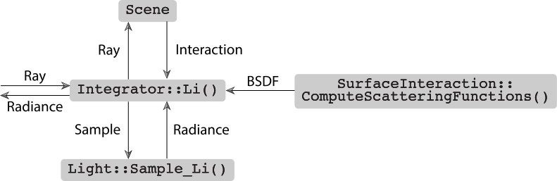
<WhittedIntegrator Method Definitions> ≡
Spectrum WhittedIntegrator::Li(const RayDifferential &ray,
const Scene &scene, Sampler &sampler, MemoryArena &arena,
int depth) const {
Spectrum L(0.);
<Find closest ray intersection or return background radiance>
<Compute emitted and reflected light at ray intersection point>
return L;
}
The first step is to find the first intersection of the ray with the shapes in the scene.
<Find closest ray intersection or return background radiance> ≡
SurfaceInteraction isect;
if (!scene.Intersect(ray, &isect)) {
for (const auto &light : scene.lights)
L += light->Le(ray);
return L;
}
For this part we ignore the effect of participating media, so that the radiance leaving the intersection point is the same as the radiance arriving at the ray's origin.
<Compute emitted and reflected light at ray intersection point> ≡
<Initialize common variables for Whitted integrator>
<Compute scattering functions for surface interaction>
<Compute emitted light if ray hit an area light source>
<Add contribution of each light source>
if (depth + 1 < maxDepth) {
<Trace rays for specular reflection and refraction>>
}
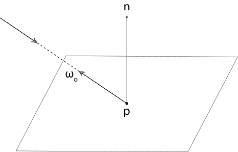
n stands for surface normal at the intersection point. $ \omega_o $ stands for normalized direction from the hit point back to the ray origin, which is written as wo in the code.
<Initialize common variables for Whitted integrator> ≡
Normal3f n = isect.shading.n;
Vector3f wo = isect.wo;
ComputeScatteringFunctions() evaluates texture function to determine surface properties and then initialize a representation of BSDF at the point.
<Compute scattering functions for surface interaction> ≡
isect.ComputeScatteringFunctions(ray, arena);
In case the ray hit geometry that is emissive, it calls SurfaceInteraction::Le() method:
<Compute emitted light if ray hit an area light source> ≡
L += isect.Le(wo);
<Add contribution of each light source> ≡
for (const auto &light : scene.lights) {
Vector3f wi;
Float pdf;
VisibilityTester visibility;
Spectrum Li = light->Sample_Li(isect, sampler.Get2D(), &wi,
&pdf, &visibility);
if (Li.IsBlack() || pdf == 0) continue;
Spectrum f = isect.bsdf->f(wo, wi);
if (!f.IsBlack() && visibility.Unoccluded(scene))
L += f * Li * AbsDot(wi, n) / pdf;
}
Light::Sample_Li() method compute the radiance of the light falling on the surface at the point being shaded, and also returns direction from the point being shaded to the light source, represented as wi.
The method also return a VisibilityTester object to determine if any primitive block the surface point from the light source. This is done by checking the shadow ray between the point being shaded and the light source is not blocked by other primitives.
Sample_Li() method also returns the probability density for the light for Monte Carlo integration with complex area light sources. For point lights, pdf = 1.
light contribution is calculated according to equation\eqref{eq:light_transport}, with only direct lighting considered in this case.
This integrator also account for reflection and refraction according to Snell's law:
<Trace rays for specular reflection and refraction> ≡
L += SpecularReflect(ray, isect, scene, sampler, arena, depth);
L += SpecularTransmit(ray, isect, scene, sampler, arena, depth);
<SamplerIntegrator Method Definitions> +≡
Spectrum SamplerIntegrator::SpecularReflect(const RayDifferential &ray,
const SurfaceInteraction &isect, const Scene &scene,
Sampler &sampler, MemoryArena &arena, int depth) const {
<Compute specular reflection direction wi and BSDF value>
<Return contribution of specular reflection>
}
In the SpecularReflect() and SpecularTransmit() methods, the BSDF::Sample_f() method returns an incident ray direction for a given outgoing direction and mode of light scattering. Here we will be only considering perfect specular reflection and refraction.
<Compute specular reflection direction wi and BSDF value> ≡
Vector3f wo = isect.wo, wi;
Float pdf;
BxDFType type = BxDFType(BSDF_REFLECTION | BSDF_SPECULAR);
Spectrum f = isect.bsdf->Sample_f(wo, &wi, sampler.Get2D(), &pdf, type);
The BSDF::Sample_f() in these functions initialize wi with the chosen direction and return the BSDF's value for the direction $ (\omega_o, \omega_i) $.
<Return contribution of specular reflection> ≡
const Normal3f &ns = isect.shading.n;
if (pdf > 0 && !f.IsBlack() && AbsDot(wi, ns) != 0) {
<Compute ray differential rd for specular reflection>
return f * Li(rd, scene, sampler, arena, depth + 1) * AbsDot(wi, ns) /
pdf;
}
else
return Spectrum(0.f);
The ray differentials are to antialias textures that are seen in reflections or refractions, it will be discussed in chapter 10.
The SpecularTransmit() method is similar with SpecularReflect(), it simply replace BSDF_REFLECTION flag to BSDF_TRANSMISSION.